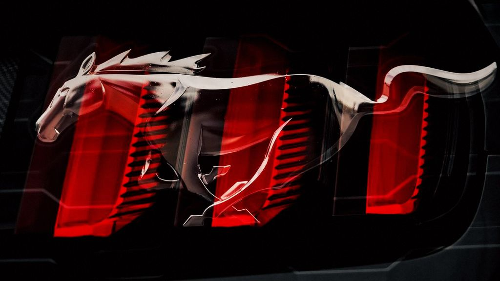

Ford platforms
Ford engines and gearboxes we tune
Ford's EcoBoost and Coyote engines power most of what we see around the GTA, from work trucks to weekend Mustangs:
- 2.7 and 3.5 EcoBoost V6: F-150, Expedition and Bronco 2.7, the most common trucks we tune.
- 3.5 High Output EcoBoost: F-150 Raptor and other High Output applications, reviewed for your model year.
- 5.0 Coyote V8: Mustang GT, Mach 1, Dark Horse and the F-150 5.0, the performance and V8 tier.
- 2.3 EcoBoost four: Mustang EcoBoost, Ranger, Bronco 2.3 and Focus RS.
- 10R80 and 6R80 automatics: The 10-speed in the F-150, Mustang and Raptor, and the 6-speed in older trucks and Mustangs.
Not on the list? Send us the year, model and engine. If the software can be calibrated safely, we will tell you what is possible and what it costs before anything is booked.
What Stage 1, Stage 2 and TCU mean on a Ford
Stage 1: software only
Software only, for the truck or car as it sits. On EcoBoost trucks that means stronger, more confident pull when towing or merging and a throttle that responds when you ask. On Mustangs it means cleaner throttle mapping and a more eager engine, with factory protections kept in place.
Stage 2: built around your parts
For vehicles with supporting hardware such as an upgraded intercooler, intake or exhaust. The map is matched to the parts and logged under load. Installs are by referral for now; we calibrate around them.
TCU: the gearbox to match
The 10R80 is a great gearbox with indecisive factory software: it hunts between gears, shifts early and can feel busy when towing. A transmission calibration firms up shifts, fixes gear hunting and holds gears properly when the truck is loaded.

Ford tuning prices
- EcoBoost trucks and Mustang EcoBoost: Stage 1: from $999
- Mustang GT, Coyote 5.0 and other V8s: performance Stage 1: from $1,499
- Stage 2 with supporting hardware: from $1,299
- 10R80 / 6R80 calibration (TCU): from $999
- Stage 1 + TCU bundle: from $1,799
- Diagnostics and health scan (credited toward a tune within 30 days): from $99
Prices are in CAD and the final quote depends on your exact car, software and goal. Your original factory map is saved before anything is written, so you can always go back to stock.
Towing with a tuned F-150
If the truck tows, tell us what and how often. We calibrate EcoBoost trucks with towing in mind, keep temperature protection in charge, and log a pull so you can see how the engine and gearbox behave together. Many 2018-and-newer Ford engine computers need an unlock step before tuning; we confirm yours before booking.
How a mobile Ford tune works
- Send your car (year, model, engine, current mods and goal) or call (416) 839-2266. We confirm support for your software and quote before booking.
- We come to your home, work or driveway with professional-grade tuning and diagnostic equipment. No drop-off, no waiting room.
- Health scan and live data first. If something needs fixing, you hear it before any calibration is written.
- Factory map saved, calibration written, then a data log to confirm the result, with clear notes on what changed.
Where we come to
No travel fee across Toronto, the GTA and Barrie.
Other makes we tune
FAQ: Ford tuning
Can you tune my F-150 at my house or job site?
Yes. We come to you with professional-grade equipment, and there is no travel fee across Toronto, the GTA and Barrie.
Is the stock tune saved?
Yes. Your original factory software is saved before anything is written, so the truck can go back to stock if you need it.
Is my Mustang GT priced as a V8?
Yes. Coyote 5.0 cars such as the Mustang GT, Mach 1 and the F-150 5.0 are in the performance and V8 tier, from $1,499 for Stage 1. EcoBoost models start from $999.
Can you fix the 10-speed's shifting?
A 10R80 calibration is from $999, or from $1,799 bundled with Stage 1. It firms up shifts and reduces gear hunting.
Do you tune the Raptor?
We review the Raptor's 3.5 High Output engine for your exact model year and software, and quote it before booking.